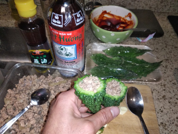
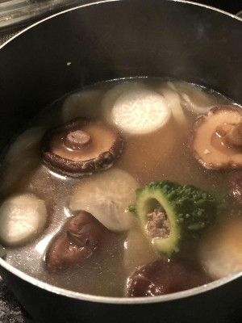
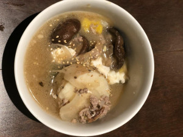
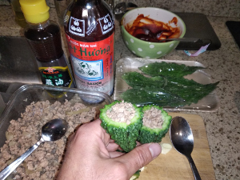
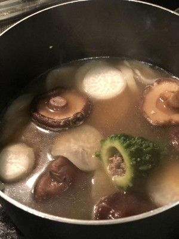
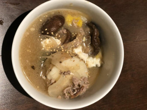

Stuffed Bittermelon
  
Ingredients:
- Pork, eggs, veggies, mushrooms, sesame oil, and whatever else you feel like. You are a humanist - follow your heart.
How to make it:
Boil everything!
  
Ingredients:
How to make it:
Boil everything!